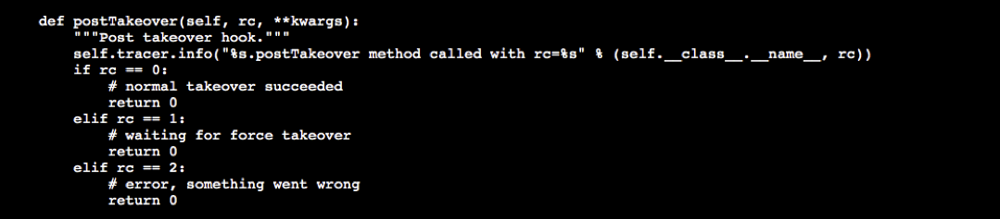

Task 01. Change HANA HSR Config
Changing the HSR option for QAS system on standby system. We are going to change Global Memory setting.
-
Connect to sechana through Session Manager.
- After log in AWS Management Console, connect to EC2 Instance Console
- Select HANA-HDB-Secondary instance, click Action, and click Connect.

- Select Session Manager and click Connect.

-
After connecting as root user, change cluster to maintenance mode and change HSR and Global Memory settings.
- Change cluster to maintenance mode.
sudo su - root crm node maintenance prihana crm node maintenance sechana- Check crm maintenance status
crm_mon -rfn1
-
After connecting as hdbadm
user, stop HDB, reduce memory resource usage of the secondary SAP HANA DB (sechana), and set preload option to false. - (sechana) HDB STOP
su - hdbadm HDB stop
- (sechana) Change global.ini settings. Open global.ini with VI editor. And add the options below.
vi /usr/sap/HDB/SYS/global/hdb/custom/config/global.ini [system_replication] ... preload_column_tables = false #Add-on [memorymanager] global_allocation_limit = 24576
-
After Takover, change SAPHanaSR-Hook so that the existing settings can be restored.
- (sechana) After log in root user, Back up the script before modifying SAPHanaSR.py.
exit cd /usr/share/SAPHanaSR/ cp -pr SAPHanaSR.py SAPHanaSR.py.default- (sechana) Modify the SAPHanaSR.py script as follows:
- Block 1(AS-Is)

- Block 1(To-Be)

- Block 2(AS-Is) 
- Block 2(To-Be)
- Please modify the script as below.
vi SAPHanaSR.py # Block 1 from hdb_ha_dr.client import HADRBase, Helper import os, time from hdbcli import dbapi dbuser = "SYSTEM" dbpwd = "Init12345!" dbport = 30013 stmnt1 = "ALTER SYSTEM ALTER CONFIGURATION ('global.ini','SYSTEM') UNSET ('memorymanager','global_allocation_limit') WITH RECONFIGURE" stmnt2 = "ALTER SYSTEM ALTER CONFIGURATION ('global.ini','SYSTEM') UNSET ('system_replication','preload_column_tables') WITH RECONFIGURE" # Block 2 def postTakeover(self, rc, **kwargs): """Post takeover hook.""" self.tracer.info("%s.postTakeover method called with rc=%s" % (self.__class__.__name__, rc)) if rc == 0: # normal takeover succeeded conn = dbapi.connect('localhost', dbport, dbuser, dbpwd) cursor = conn.cursor() cursor.execute(stmnt1) cursor.execute(stmnt2) return 0 elif rc == 1: # waiting for force takeover conn = dbapi.connect('localhost', dbport, dbuser, dbpwd) cursor = conn.cursor() cursor.execute(stmnt1) cursor.execute(stmnt2) return 0 elif rc == 2: # error, something went wrong return 0 - Block 1(AS-Is)
-
After connecting as hdbadm
user, start HDB, and perform TAKEOVER TEST. - (sechana) HDB START
su - hdbadm HDB start
- (sechana) Check HSR status.
hdbnsutil -sr_state- (sechana) takeover to sechana
hdbnsutil -sr_takeover
- (sechana) After Takeover, check whether global.ini setting is restored by SAPHanaSR.py.
cat /usr/sap/HDB/SYS/global/hdb/custom/config/global.ini
- Since HA Cluster is currently in maintenance mode, automatic Takeover or Takeback using HA Cluster is not possible. To restore HSR to its original state, manually reset the HSR in the following order.
- Keep the connection of sechana, and also connect to prihana through Session Manager.
- Connect to EC2 Instance Console.
- Select HANA-HDB-Primary instance, click Action, and click Connect.

- Select Session Manager and click Connect.
- (prihana) After connecting as hdbadm
user, execute sr_register as seconadry Database
sudo su - hdbadm HDB stop hdbnsutil -sr_register --remoteHost=sechana --remoteInstance=00 --replicationMode=sync --name=HAP --operationMode=logreplay HDB start
- (prihana) Check the synchronization status
hdbnsutil -sr_state
- (prihana) takeback to prihana
hdbnsutil -sr_takeover
- (sechana) After connecting as hdbadm
user, execute sr_register as seconadry Database
su - hdbadm HDB stop hdbnsutil -sr_register --remoteHost=prihana --remoteInstance=00 --replicationMode=sync --name=HAS --operationMode=logreplay
- (sechana) Change global.ini settings. Open global.ini with VI editor. And add the options below.
vi /usr/sap/HDB/SYS/global/hdb/custom/config/global.ini [system_replication] ... preload_column_tables = false #Add-on [memorymanager] global_allocation_limit = 24576- (sechana) After connecting as hdbadm
user, HDB start
HDB start
© 2020, Amazon Web Services, Inc. or its affiliates. All rights reserved.